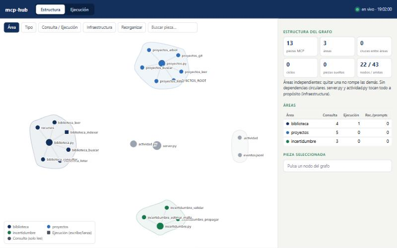

Agentes · MCP
Darle herramientas al agente, no más prompt
¿Cómo consigo que un asistente consulte la documentación y calcule de verdad en lugar de responder de memoria?
Protocolo Model Context ProtocolLenguaje PythonCliente Claude / MCP
13herramientas publicadas
18tests en verde
3áreas sin dependencias entre sí
El problema
Un modelo no tiene delante tus documentos y no es una calculadora fiable.
La solución
- Un servidor MCP con búsqueda con cita, cálculo de incertidumbre y lectura de código.
- Cada herramienta declara si solo consulta o si ejecuta, y un test lo exige.
- Acceso limitado a carpetas permitidas.
- Panel en vivo para ver qué usa el agente.
Qué aporta
La respuesta se apoya en código probado y queda registro de cada llamada.
Una sesión paso a paso
Salida real del cliente de demostración.
Panel del servidor

Límites. La sesión que se ve abajo usa un cliente con guion fijo, sin modelo, para mostrar el protocolo.